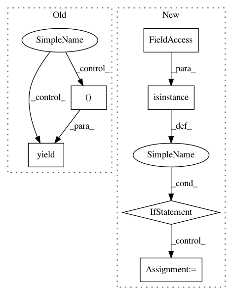

06ad3987ba430ec738eb36c5b99bdf7b21992f07,homeassistant/helpers/__init__.py,,config_per_platform,#Any#Any#Any#,91
Before Change
logger.warning("No platform specified for %s", config_key)
break
yield platform_type, platform_config
found += 1
config_key = "{} {}".format(domain, found)
After Change
while config_key in config:
platform_config = config[config_key]
if not isinstance(platform_config, list):
platform_config = [platform_config]
for item in platform_config:
platform_type = item.get(CONF_PLATFORM)
if platform_type is None:
In pattern: SUPERPATTERN
Frequency: 3
Non-data size: 6
Instances
Project Name: home-assistant/home-assistant
Commit Name: 06ad3987ba430ec738eb36c5b99bdf7b21992f07
Time: 2015-03-10
Author: andyt05@gmail.com
File Name: homeassistant/helpers/__init__.py
Class Name:
Method Name: config_per_platform
Project Name: cornellius-gp/gpytorch
Commit Name: bbca270ad5dfb3440f0766db9dffd214f28e0566
Time: 2020-08-24
Author: gpleiss@gmail.com
File Name: gpytorch/module.py
Class Name: Module
Method Name: named_hyperparameters
Project Name: cornellius-gp/gpytorch
Commit Name: bbca270ad5dfb3440f0766db9dffd214f28e0566
Time: 2020-08-24
Author: gpleiss@gmail.com
File Name: gpytorch/module.py
Class Name: Module
Method Name: named_variational_parameters